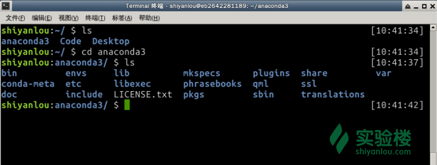
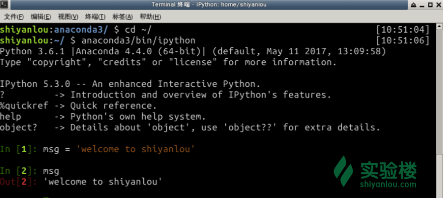
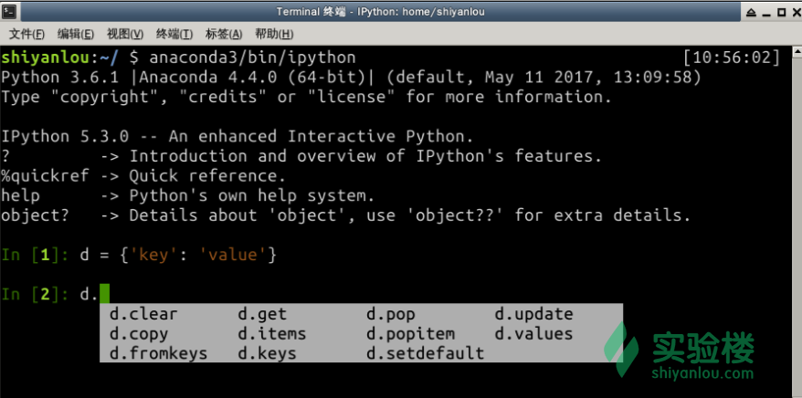
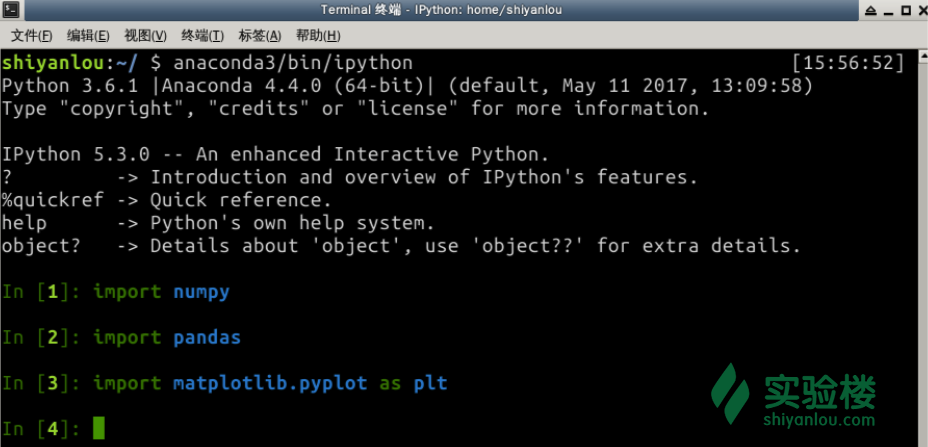
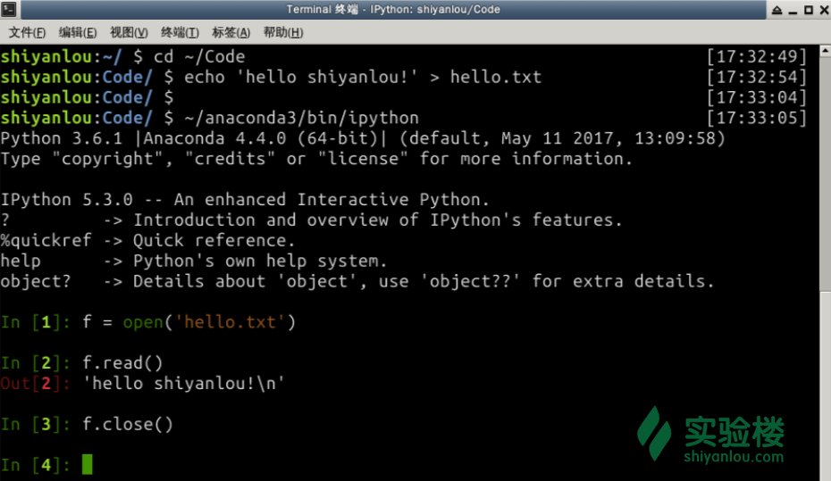

本实验为实验楼训练营课程 《Python 数据分析入门与进阶》的第一个章节，在该章节中我们将学习 Python 的基础知识，将基于 Python 3 讲解。
Python 作为一门动态编程语言，以简单易用的特性变得越来越流行，同时 Python 具有丰富活跃的生态环境，包含各种任务用途的软件。比如 Web 开发框架 Django、Flask，数据库访问处理 SQLAlchemy，爬虫框架 Scrapy, 数据分析 NumPy, Pandas 等软件包都基于 Python 开发。有了这些高质量软件包的支持，我们就可以完成各种各样的任务需求。
对于数据分析来说，也同样有各种各样的 Python 软件包，如：
除了以上软件包，还有其他大量用于数据分析的 Python 软件包，如果在数据分析过程中遇到一些任务需求，不妨搜索下有没有方便的软件包可以使用。
同时 Python 也是一门胶水语言，可以快速绑定到其他语言实现的数据分析框架上，这样由于 Python 动态语言的特性就可以快速实现相关模型。比如 TensorFlow 核心使用 C++ 开发，但是同时提供了 Python 绑定，这样就可以很方便的使用 Python 代码快速学习 TensorFlow 了。同理，当使用 Python 实现数据分析模型以后，如果发现模型中有些部分需要更高性能的编程语言进行实现时，也可以很方便的绑定替换。
前文中我们知道 Python 包含各种各样的数据分析软件包，如果我们一个一个安装这些软件包将比较麻烦，幸运的是我们可以直接使用 Anaconda, ActivePython 这些 Python 发行版，在这些发行版中，已经预安装了各种各样的数据分析软件包，这样我们就不必将时间浪费中环境搭建上了。
本课程中，我们将基于 Anaconda Python 发行版学习数据分析。在实验楼环境中， 已经预先安装好了 Anaconda，可以通过 终端 查看，如下所示： 
可以看到 Anaconda 已经安装到了 /home/shiyanlou 目录下，在该目录中可以通过命令 anaconda3/bin/ipython 启动 IPython 交互式终端，本节实验所有内容我们都将在 IPython 终端中学习完成，如下图所述： 
上图中， IPython 交互式终端启动成功，可以看到 In [1] 提示符，代表第一次输入的意思。In 代表输入，数字代表输入编号。当我们输入代码后回车后，会显示 Out 提示符，上图中 Out [2] 表示输入编号为 2 的输出。
目前为止，环境已经可以正常工作了，Anaconda Python 发行版还可以运行在 Windows, Mac OS 平台。如果有需要，你可以在本地下载安装练习本课程内容。
Python 本身非常简单, 主要语法如下：
# 开头，赋值通过等号 = 实现；== 用于相等判断, != 用于不等判断， is 用于判断变量是否为 None 值；and 和 or 用于逻辑和，逻辑与运算；+= 和 -= 用于增加/减少运算；True 和 False 代表真值和假值；: 字符结束，并且开启一个缩进级别；代码示例:
In [1]: a = u'你好，实验楼'
In [2]: a = 10
In [3]: a == 10
Out[3]: True
In [4]: a is None
Out[4]: False
In [5]: a = None
In [6]: a is None
Out[6]: True
In [7]: a and 1
In [8]: a = True
In [9]: a and False
Out[9]: False
In [10]: b = 'hello'
In [11]: b += ' world'
In [12]: print(b)
hello world
可以看到 a 可以被赋予各种值，不同于静态类型编程语言。
Python 语言内置了数字，字符串，None 值，元组，列表，字典，集合几种数据类型下面我们一一讲解。
() 圆括号进行创建，不可改变；[] 创建，可以插入或者删除其中的值；{key: value} 形式创建，代表键值对，也就是哈希表，键和值的类型没有要求；{1, 2} 形式创建，其不包含重复的元素；代码示例:
In [1]: a = 10
In [2]: b = 3.3
In [3]: t = (1, 2)
In [4]: len(t)
Out[4]: 2
In [5]: l = [1, 2, 3, 4, 5]
In [6]: len(l)
Out[6]: 5
In [7]: l.append(6)
In [8]: l
Out[8]: [1, 2, 3, 4, 5, 6]
In [9]: d = {'key': 'value'}
In [10]: d.keys()
Out[10]: dict_keys(['key'])
In [11]: d.values()
Out[11]: dict_values(['value'])
In [12]: d['key'] = 10
In [13]: d
Out[13]: {'key': 10}
In [14]: s = {1, 2}
In [15]: 1 in s
Out[15]: True
In [16]: s.add(1)
In [17]: s
Out[17]: {1, 2}
以上代码中，我们分别创建了整数类型，元组，列表，字典以及集合。可以看到列表可以通过 append 方法在其尾部插入元素，字典可以通过 keys 方法返回所有的键，而可以通过 in 关键字判断集合是否存在一个元素。
数字，字符串，元组，列表，字典，集合都是 Python 的基础类型，包含这些基础类型值的变量也是一个对象实例。在 IPython 交互式终端中，可以通过输入变量名称，然后输入点 .，再按下 tab 键就可以显示出这个变量所在实例对象包含的所有可用方法，如下图: 
在上图中，我们定义赋值了一个字典，然后可以看到该对象实例上包含非常多的方法，比如 clear, update, pop 等方法。另外，可以通过 help 函数查看一个 Python 对象的帮助文件（主要是文档字符串）。
在 Python 中，可以通过 def 关键字定义函数，如下代码所示：
import random
import string
def random_str(n):
""" 生成指定 n 长度的随机字符串
"""
s = string.ascii_letters + string.ascii_uppercase + string.digits
return ''.join(random.sample(s, n))
以上代码中，我们定义了 random_str 函数，该函数生成并返回指定长度的随机字符串，可以看到我们还用到了后面讲到的包。
函数可以包含参数，以上代码中，我们使用 n指明了字符串长度，参数可以有默认值，比如以下代码：
def random_str(n=8):
""" generate n length random string
"""
s = string.ascii_letters + string.ascii_uppercase + string.digits
return ''.join(random.sample(s, n))
当未提供参数调用该函数时，将返回长度为 8 的随机字符串。使用示例:
In [8]: random_str(10)
Out[8]: 'ZWMKjas0ED'
In [9]: random_str()
Out[9]: 'xQj5ODfC'
在 Python 中也可以通过关键字 lambda 定义匿名函数，匿名函数作为参数传递给其他函数时，非常有用。Python 中的数据类型字典，本身的键值是无序的，有的时候需要针对键值进行排序，这个时候匿名函数就非常有用，如下代码：
In [48]: d = {'k1': 5, 'k2': 2, 'k3': 3}
In [49]: d.items()
Out[49]: dict_items([('k1', 5), ('k2', 2), ('k3', 3)])
In [50]: sorted(d.items(), key = lambda x: x[1])
Out[50]: [('k2', 2), ('k3', 3), ('k1', 5)]
以上代码中，首先定义了一个字典，然后通过 sorted 函数结合匿名函数对字典的键值对安装值得大小进行了排序。这里的匿名函数 lambda x: x[1] 非常简单，返回键值元组的第二个元素，例如 ('k2', 2) 中的 2 。
Python 中可以通过 class 关键字定义类，通过类可以生成相应的对象实例。类中一般有 __init__ 方法，在该方法中可以对实例进行各种初始化操作，比如以下代码：
class Course:
""" course class
"""
def __init__(self, name, desc):
self.name = name
self.description = desc
self.labs = []
def register_lab(self, lab):
self.labs.append(lab)
@property
def lab_count(self):
return len(self.labs)
以上代码中，我们定义了类 Course ，该类有 register_lab 和 lab_count 两个实例方法。实例方法第一个参数是 self，代表实例自己。该类初始化时接受 name 和 desc 两个参数，也就是 __init__ 方法的参数。
以上代码中，我们使用了 property 装饰器，该装饰器可以使得函数像属性一些样访问。装饰器在 Python 中是作用非常强大，其主要作用就是装饰一个函数并改变函数的访问方式。
使用示例：
In [14]: course = Course(name='Linux basic', desc='basic command, shell script ....')
In [15]: course.name
Out[15]: 'Linux basic'
In [16]: course.description
Out[16]: 'basic command, shell script ....'
In [17]: course.lab_count
Out[17]: 0
In [18]: course.register_lab('first lab')
In [19]: course.lab_count
Out[19]: 1
以上代码中，我们使用 Course生成了一个 course 示例。可以看到传递的参数其实就是 __init__ 的方法的参数列表。接着可以通过实例访问在 __init__ 方法中定义的属性，比如 course.name 和 course.description。由于使用了属性装饰器，所以可以像访问属性一样通过 course.lab_count 访问 lab_count 方法。
正是由于有包的存在才使得 Python 越发强大。Python 代码可以通过包的形式组织在一起，也可以通过包的形式进行发布。Python 标准版在发行时，已经内置了一些包，这些包称为标准库，比如上文中用到的 random, string 软件包。而其他更多的包，可以在 pypi 网站上可以搜索到并通过 pip 包管理工具安装。
本课程学习过程中，我们使用 Anaconda 发行版，前文中我们已经说过，该发行版的最大特色就是已经预安装了各种常用的数据分析软件包，如下图：

可以看到我们可以通过 import 正常导入 Pandas, NumPy 等包，说明这些软件包已经被安装了。
编写 Python 代码时，可以通过 import 或者 from ... import ... 这种形式导入包。如下代码中：
In [1]: import pandas
In [2]: import matplotlib.pyplot as plt
In [3]: from sklearn.cluster import KMeans
以上代码中演示了如何导入。导入包时可以使用 as 关键字为包起别名，比如我们将 matplotlib.pyplot 导入后取名为 plt, 这样在后面的代码中就可以直接使用后 plt 表示 pyplot 了。
在 Python 中访问文件非常简单，主要通过 open 函数完成相关操作。下面通过代码进行演示，首先通过终端输入以下命令创建 hello.txt 文件：
cd ~/Code
echo 'hello shiyanlou!' > hello.txt
已上命令中，我们创建了一个包含 hello shiyanlou! 内容的文件，然后在 ~/Code 目录中启动 IPython, 通过 open 函数打开文件： 
open 函数打开文件后，将返回一个文件对象，可以调用该文件对象的各种方法进行读写操作。比如我们调用了 read 方法，读取了文件的所有内容，接着使用 close 方法关闭了文件。
可以指定 open 函数调用参数，如果想写文件，可以通过 open('hello.txt', 'w+') 打开文件：
In [20]: import json
In [21]: d = [{'id': 5348, 'name': 'Luo'}, {'id': 13, 'name': 'Lei'}]
In [22]: content = json.dumps(d)
In [23]: with open('users.json', 'w+') as f:
...: f.write(content)
...:
In [24]: f = open('users.json')
In [25]: f.read()
Out[25]: '[{"id": 5348, "name": "Luo"}, {"id": 13, "name": "Lei"}]'
In [26]: f.close()
以上代码中，先将一个字典通过 json.dumps转换为 json 字符串，然后通过 open('users.json', 'w+') 打开文件，并将文件写入到 users.json 文件中。这里需要注意的时候，由于文件对象同时也是一个上下文管理器，所以可以通过 with 关键字打开文件，这样当 with 代码块执行完以后，文件对象就会自动关闭，避免忘记关闭文件的情况发生。
本节实验中，主要以 Python 基础知识为主，这些知识点都是后续课程内容的基础，所以需要多加练习。
虽然 Python 本身比较简单，但在短短的一节实验中难以覆盖到全部基础知识点。更多更全面的 Python 知识，可以在实验楼其他课程中进行学习。
下一节实验中，我们将遇到一个关于 json 文件处理方面的挑战，需要使用本节学习到的基础知识完成挑战。